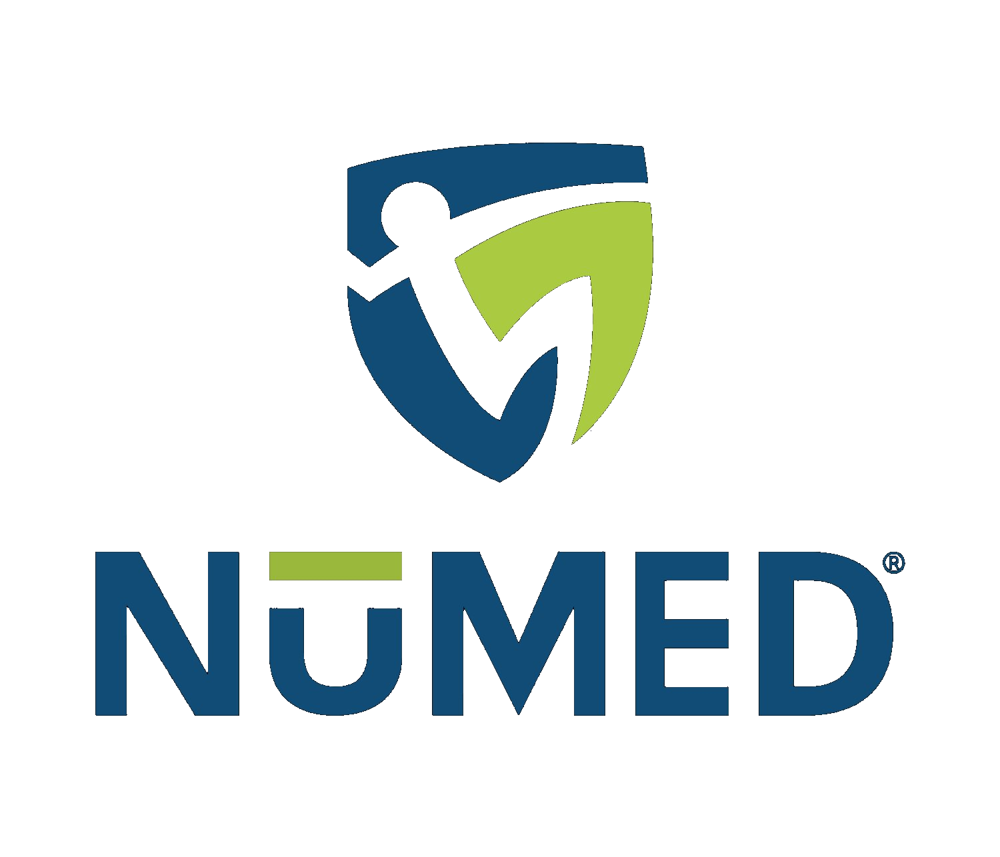
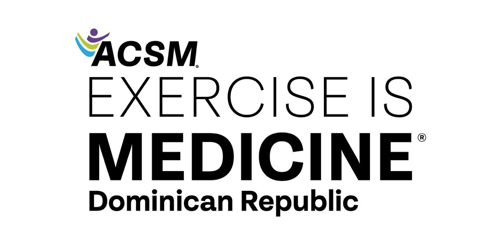

QR del cuestionario
Al escanearlo se abre únicamente la Escala de Estrés Percibido.
Las respuestas se guardan de forma centralizada en Supabase. El panel requiere una sesión autenticada de NUMED para consultar datos individuales.


Comparte el QR, recibe los cuestionarios y consulta el resultado de cada persona.
Al escanearlo se abre únicamente la Escala de Estrés Percibido.
Las respuestas se guardan de forma centralizada en Supabase. El panel requiere una sesión autenticada de NUMED para consultar datos individuales.
Personas que completaron Estrés Percibido.
Completa tus datos y responde cómo te has sentido durante el último mes.
Tu cuestionario fue enviado.